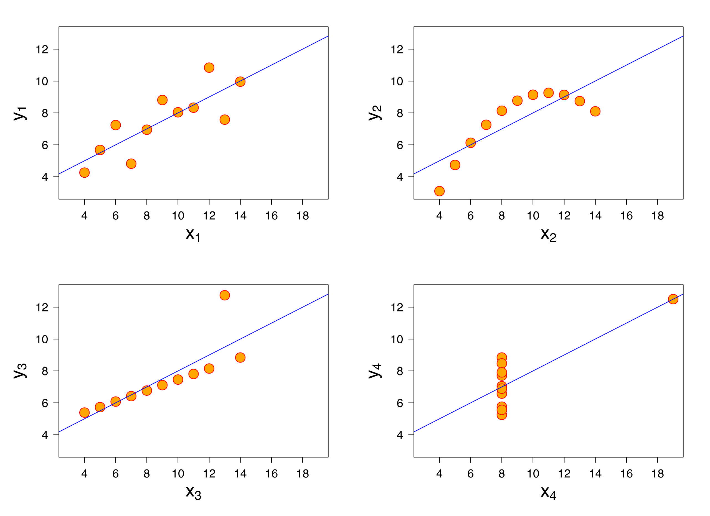

Introduction to data-driven investigation
bit.ly/3pZs3mH
You can also find the GitHub repository for this presentation at:
About me

Tom Cardoso, investigative reporter
at The Globe and Mail
Some of the stuff we’ll cover today:
- Why use data?
- Acquisition
- Analysis
- Visualization
- Applying data to your storytelling
- Story examples
- Advanced techniques
Why use data?
Data can strengthen your story.
Unlike most storytelling techniques, data allows you to make non-anecdotal conclusions. Put simply, a strong data-driven finding can give you your nut graf.
But don’t assume your data is the truth! Data can be just as deceptive and malleable as anecdotal evidence – especially if not used carefully.
A technical example: Anscombe’s quartet
The datasets used to generate all four charts have the same descriptive statistics: mean, standard deviation and correlation. Yet the datasets are clearly different!
A real-world example: Early coverage of mortality rates for COVID-19 infections.
Back in May, 2020, some focused on the fact that COVID-19 had killed fewer people than the flu.
This was technically true in absolute terms – early in the pandemic, an average flu year killed more people than COVID-19 had by that point. But the mortality rate for those who’d contracted COVID-19 was far greater than for the flu, meaning the disease is much deadlier.
A lesson when using data, then: Even the strongest-looking statistics may hide assumptions and slanted interpretations. Be careful!
Acquiring data
Much of your work will be in sourcing data, and then cleaning it once you’ve obtained it. There are many ways to get the info you need:
- File a data-oriented freedom of information request. (Check out my talk on this here.)
- Use a public resource like Statistics Canada. A caveat: Their data are highly summarized and aggregated, meaning they’re less useful for detailed exploration.
- Email someone – the government, an academic, etc. – and politely ask for the data you need. You’d be surprised how often this works.
- Scrape it! (I’ve got a half-day course on this here.)
- Use an open data portal. (I rarely, if ever use these.)
Ultimately, though, the best way to find the data you need is to pick up the phone.
Let people guide you and point you towards what kind of data you should look at for your story, where you can find it, etc.
Analysis
Before you can really start analyzing, odds are you’ll need to clean your data in some way. Roughly 80 per cent of the total time I spend with a dataset is dedicated to cleaning up variable names, standardizing values as needed, etc.
Cleaning tasks will be different for each project, so you won’t know what you need to do until you see the file(s).
When analyzing your data – be it in Excel, Google Sheets, Tableau or a more advanced tool like R or Python – you should let the data guide you.
Try not to make any assumptions or go in expecting certain outcomes.
Instead, build up your analysis step by step.
Start with simple descriptive statistics: averages, medians, etc. From there, move on to doing those operations in groups (in Excel, you’d do this in Pivot Tables, but it becomes far easier in R or Python.)
Once you’ve built up a feel for the data, you’ll know enough to begin “interviewing” it.
Ask questions. For instance, if you were working on a story about emergency response times, you might ask:
How often are paramedics being called to a particular postal code? How long do they take to respond to that postal code compared to their average response time? Where are they fastest? Where are they slowest?
As you arrive at conclusions, and especially if they’re surprising or revelatory, you should try to actively disprove your findings. Attack the same problem from the opposite perspective: Is there any way you could’ve misinterpreted the data?
This process will force you to shore up your analysis and identify any gaps in the findings.
Finally, document your analysis process. What steps did you take to arrive at your findings?
Consider writing a methodology story to accompany your main piece.
Visualization
Visualization is essential – both during analysis, and when presenting your final product.
During analysis, you should always be visualizing. Try to chart constantly: Your visuals will reveal hidden patterns and point at new ways to interrogate your data.
For instance…
A quick glance reveals little about what the data shows. In fact, it looks fairly random. But…
Once you have your data collected and analysis done, it’s time to visualize. There are many tools you can use here:
- Datawrapper (the best tool for the general public, hands down)
- Flourish
- RAW Graphs
- Tableau
- Making it yourself using Adobe Illustrator, R, Python, etc.
Using data in your story
Some examples
Levelling up: R
There are inherent limits to what Excel can do. At a certain point, your analysis will require so many steps or take so long that it’s no longer a good idea to work in Excel, Google Sheets or Tableau.
At that point, you should consider learning a programming language. My strong advice here (and personal preference) is R, a statistical programming language that is surprisingly easy to pick up.
With R, you can:
- Run a complex, multi-stage analysis on gigabytes of data with millions of rows.
- Easily perform tasks that are difficult when using simple spreadsheets, like joins or string manipulation.
- Codify your data cleaning pipeline for a given project, which allows you to focus on analysis.
- Easily create visualizations as you work.
- Write scrapers to automate data collection.
- Eventually apply advanced techniques, like statistical modelling and machine learning.
“Great! How do I learn R?”
The best introductory resource is R for Data Science.
Another great resource, meant for journalists, is Intro to R for Journalists.